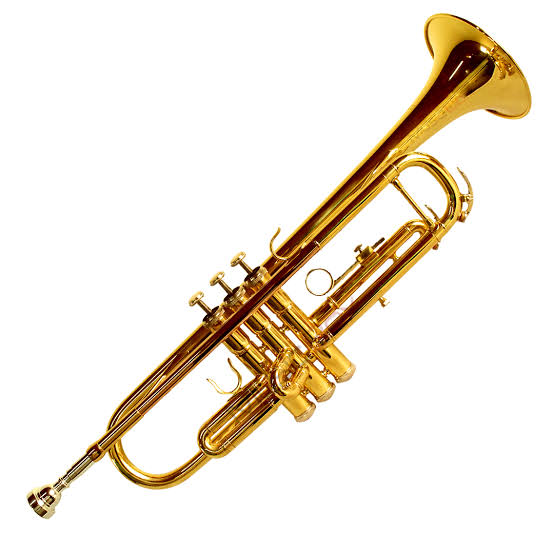
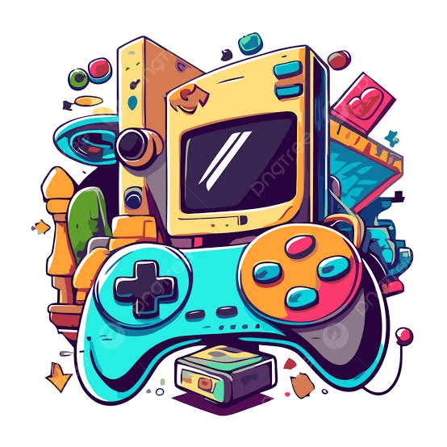

Tocar la trompeta representa mi principal vía de expresión artística y disciplina personal. La ejecución de este instrumento de viento-metal requiere no solo de oído musical y sensibilidad artística, sino también de una técnica rigurosa que involucra el control de la respiración, el desarrollo de la embocadura y una práctica constante.
A través de la trompeta he aprendido valores fundamentales como la paciencia y la perseverancia, ya que dominar una pieza musical exige descomponer cada compás y repetirlo con precisión hasta lograr la afinación y la fuerza interpretativa deseada.
Los videojuegos son para mí mucho más que un pasatiempo; son una plataforma de desafío mental, trabajo en equipo y relajación. A través de ellos me enfrento a entornos dinámicos que exigen toma de decisiones rápidas, análisis táctico y reflejos agudos bajo presión.
Ya sea superando retos individuales que requieren paciencia y estrategia, o participando en modalidades multijugador donde la comunicación clara con los compañeros es la clave de la victoria, esta afición estimula la memoria espacial, la adaptabilidad a cambios inesperados y la resiliencia ante la derrota.

